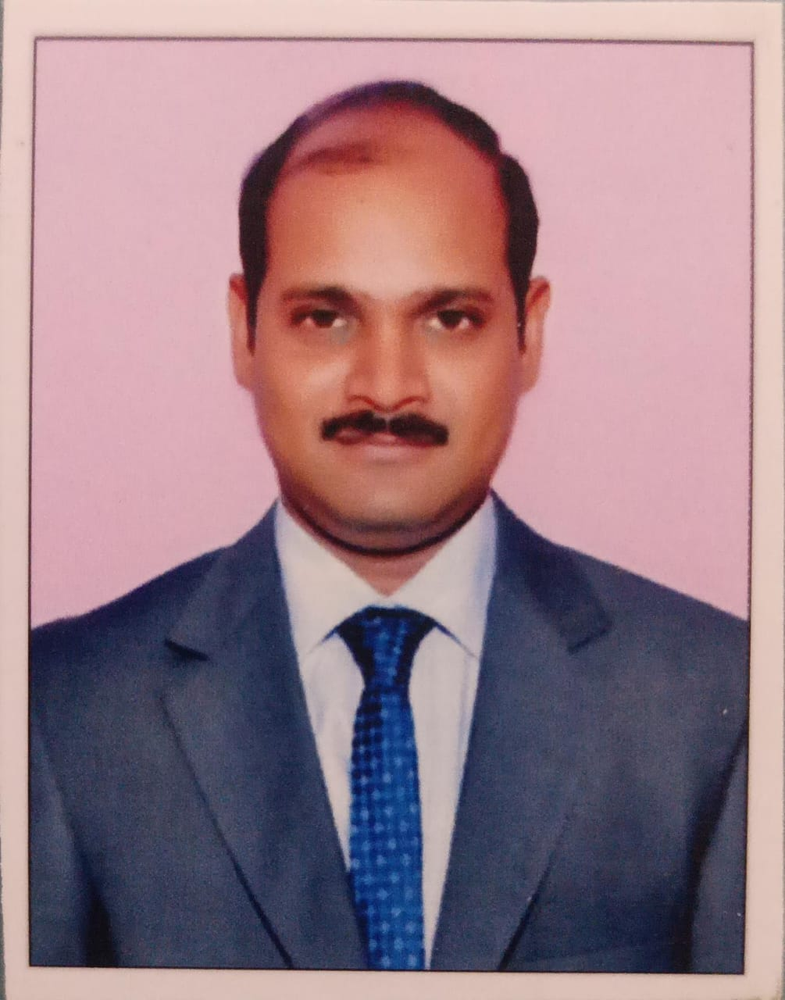

R G Gangadhar
E-Mail: gangadhar_bk@yahoo.com
Phone: +91-9840438823
Targeting assignments as
Tool Design, Product Development, Manufacturing Operations
with a leading organization of repute
PROFILE SUMMARY
- A competent professional with nearly 13 years of experience in Tool Design, Product Development and Manufacturing Operations.
- Associated with TI Cycles of India, Chennai as Tool design lead – Product Development Department.
- Proven capability to provide leadership to develop available resources and drive and deliver financial business results.
- Gained exposure in manufacturing engineering, production engineering, process engineering, layout planning, facility planning, process planning as well as project management.
- Presented a technical paper on “Hydrogen as Automobile Fuel” conducted by REC, Jalandhar, Punjab in September 2002 and won the First Prize.
- A quick learner, dynamic go-getter, able to manage a group of professionals and motivate them to achieve the set goals.
CORE COMPETENCIES
Tool Designing
Quality conpliance
Process improvement
Product development
Tool Manufacturing
Reaserch & Development
Manufacturing Operations
Vendor Management
Cost Optmisation
ORGANISATIONAL EXPERIENCE
Apr’08 to Mar'18 with TI Cycles of India, Chennai – Product Development Department
Jan’05 – Mar’08 with Lucas TVS, Chennai as Tool Design Engineer
Key Result Areas
- Designing & manufacturing of jigs, fixtures & cutting tools, including design and reviews, recommending design modifications based on client requirements.
- Developing the conceptual design of various products entailing drawings & specification study, quotation enquiry study & finalization, vendor selection & finalization, schedule for development, first sample approval, tool modification and final part approval
- Developing tools, jigs and fixtures as per predefined specifications; undertaking testing / inspection of jigs & fixtures, identifying defects & making relevant modifications
- Reviewing the engineering / design changes & resolving quality related problems associated with design. Final checking and release of engineering drawings for the development
- Upgrading the tools, dies, jigs & fixtures and implementing the process control standards.
- Appraising the prevalent production systems/ processes, identifying loopholes, if any and undertaking result-oriented measures for alleviating them and documenting the same.
- Undertaking predictive & preventive maintenance schedules for various machinery and equipment to increase machine uptime and reliability.
- Identifying areas of obstruction / defects and conducting service and repair to rectify the equipment through application of troubleshooting tools.
- Analysing the problem & troubleshooting tools & dies, also identifying scope for modifications in equipment, process flow, working practices, consumables, power for controlling & reducing conversion cost per unit produced.
In TI Cycles of India, Chennai
- Modifed punch profile for multi axis tube cutting machine to reduce the tool cost.
- Modified fixture design for better alignment of frame.
- Developed tools for complicated section tube forming in conventional presses.
In Lucas TVS, Chennai
- Modified design of stator lamination tool to reduce the tool mainatenace cost.
- Commonised tools for quick changing in rotor pressing for various varieties.
MAJOR PROJECTS
In TI Cycles of India, Chennai
- Development of special Tube for I-Bike Frame, Rocky ZX Frame, Thriller Plus Frame.
- Development of Support Tube for Lady Bird Shine.
Design of :
- Welding Fixtures.
- Tube Bending Press Tools.
- Tube Piercing Tools.
- Tube Hollow Drilling Tools.
- Tube Cutting Tools.
- Tube forming tools.
In Lucas TVS, Chennai
- SIA 130 LWB Indigo Alternator (for Tata Motors).
- SIA 120 Alternator (for Hyundai).
- SIA 100 Alternator (for TAFE).
- SIA 114 & SIA121 Alternators (for Tata Motors).
Design of :
- Edge Winding Press Tool for Stator Core Pack.
- Curling Tool for Stator Strip Curling.
- Riveting Tool for Stator Riveting.
- Tapping Fixture for Bracket Tapping.
- Drill Jig for Bracket Hole Machining.
- Insert Pressing Tool for Bracket.
- Rotor Ring Punching Tool.
ACADEMIC DETAILS
- Post-Graduation in Tool & Die Design from Central Institute of Tool Design (C.I.T.D), Hyderabad with 79% in 2005.
- B.Tech. in Mechanical Engineering from Vignan Institute of Technology and Science, Hyderabad affiliated to Jawaharlal Nehru Technological University with 77% in 2003.
- Diploma from Sri Mullapudi Venkatraya Memorial Polytechnic College, Tanuku, West – Godavari, A.P with 86.18 % in 1999.
- 10th from SCGBM, High School, Palakol, West–Godavari, A.P with 82.17% in 1996.
IT SKILLS
- AutoCAD
- Pro-E Creo
- End User of Windchill
- End user of ERP Oracle
PERSONAL DETAILS
- DOB: 11-08-1981
- languages Known: English,Hindi,Telugu,Tamil
- Mailing address: No:45, Kambar street, TMP Nagar, Padi, Chennai - 600050